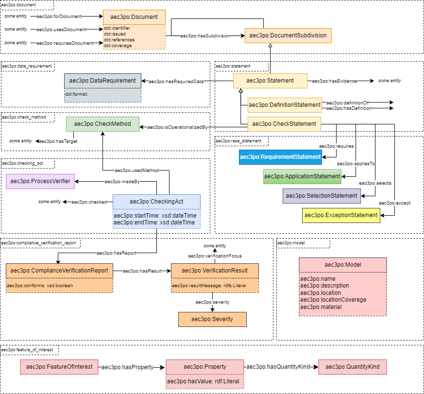
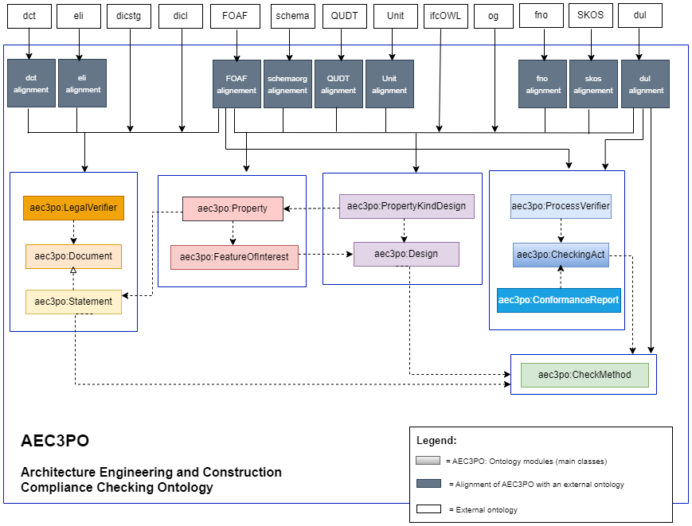

AEC3PO
Metadata
- IRI
-
https://w3id.org/lbd/aec3po/ - Title
-
AEC3PO
- Creator
-
- https://w3id.org/lbd/aec3po/edlira
- https://w3id.org/lbd/aec3po/pan
- Contributor
-
- http://maxime-lefrancois.info/me#
- https://w3id.org/lbd/aec3po/amna
- https://w3id.org/lbd/aec3po/thomas
- https://w3id.org/lbd/aec3po/vladimir
- Preferred Namespace Prefix
-
aec3po
- Note
-
Main classes and properties in the AEC3PO ontology are aligned to higher level ontologies, such as DUL.
Description
The Architecture, Engineering, Construction, Compliance Checking and Permitting Ontology (AEC3PO) is an ontology developed to support the automated compliance checking of construction, renovation, and demolition works. It has been developed in the context of the Automated Compliance Checking for Construction, Renovation or Demolition Works (ACCORD) project, an ERC/Horizon-funded project that aims to digitalise permitting and compliance processes.
AEC3PO aims to capture all aspects of building compliance and building permitting in Architecture, Engineering, and Construction (AEC), across different regulatory systems. It allows the modelling of aspects such as:
- building and infrastructure codes, regulations, and standards, and their compliance requirements
- building and infrastructure permitting processes and documentation
- building and infrastructure compliance and permitting actors
Overview of AEC3PO modules and alignements
AEC3PO Modules
AEC3PO aims to model all aspects of compliance and permitting on the AEC domain, across different regulatory systems. It is organised into modules, comprising of classes and properties. The figure below shows an overview of these modules and their relations.

Below is an overview of the core modules and their components:
-
Document :A document, of any kind, typically related to compliance and permitting.
- Classes: Document , DocumentSubdivision .
- Properties: hasPart , hasRequiredData , forDocument , hasPermittingStage , etc .
-
Statement : A statement, of any kind, found in a document.
- Classes: Statement , DefinitionStatement , CheckStatement , CheckListStatement , CategoryCheckStatement , CertificateCheckStatement , BooleanCheckStatement , NumericalCheckStatement , HumanEvaluatedCheckStatement , etc .
- Properties: hasSubdivision , hasRequiredData , hasEvidence , hasDefinition , definitionOf , etc .
-
DataRequirement : The data requirements that derive from a statement. These can describe any aspect of the building model or any type of property, physical or conceptual, associated with it.
- Classes: DataRequirement , IDS .
- Properties: hasFormat , etc .
-
Evidence : The evidence that an actor in the compliance and permitting process needs to provide in order to prove that the requirements derived from a Statement have been met.
- Classes: Evidence .
- Properties: hasFormat , forDocument , etc .
-
CheckMethod : Information that operationalizes Checks in documents.
- Classes: CheckMethod , BooleanCheckMethod , ComponentCheckMethod , SHACLCheckMethod , CompositeCheckMethod , FuncionCheckMethod , etc .
- Properties: hasUnit , hasTarget , operationalizes , operationalizedBy , etc .
-
FeatureOfInterest : An element of a site, building, or piece of infrastructure that is of interest. Typically, this will be a building component that needs to be compliant to regulations, or be documented in the permitting process.
- Classes: FeatureOfInterest , Property , PropertyKind , QuantityKind , etc .
- Properties: hasProperty , hasQuantityKind , hasPropertyKind , hasContext , etc .
-
CheckingAct : The act of checking an entity for compliance, and producing the respective report.
- Classes: CheckingAct , ProcessVerifier , etc .
- Properties: usedMethod , madeBy , hasReport , checks , etc .
-
ComplianceVerificationReport : An automatically generated report that checks if all the assigned compliance requirements (typically Checks) have been met. This will typically show the results of some
aec3po:ProcesVerifierchecking entities via someaec3po:CheckingAct. Entities may be validated or repudiated.- Classes: ComplianceverificationReport , result , ValidationResult , Severity , etc .
- Properties: conforms , focus , resultMessage , resultSeverity , Info , Violation , Severity , etc.
-
Legal Verifier : This AEC3PO module defines state and private verifiers.
- Classes: LegalVerifier , PrivateVerifier , StateVerifier .
-
Model : A model representing part or the entirety of a site, building, or piece of infrastructure. Typically these will be Building Information Models.
- Classes: Model , Phase , Element , Classification , etc .
- Properties: name , description , location , locationCoverage , material , hasBuildingPhase , hasDimension , hasElementPhase , hasClassification , etc.
-
Table :A table as representations of data in rows and columns. Tables are described by captions.
- Classes: Container , Table , Column , Row , Cell .
- Properties: contains , isContainedIn , caption .
-
RASEStatement : This AEC3PO module describes statements decomposed following the Requirement Application Selection and Exception (RASE) methodology.
- Classes: RequirementStatement , ApplicationStatement , SelectionStatement , ExceptionStatement .
- Properties: requires , appliesTo , selects , except .
AEC3PO Alignments and Reuse
AEC3PO contains five modules, which import an external ontology and specify alignment axioms to connect the terms. The figure below illustrates the alignment of AEC3PO with the imported ontologies. AEC3PO is positioned in the centre, with the imported ontologies represented as separate nodes.

| Ontology | Namespace | Prefix | Description and Usage |
|---|---|---|---|
| DCMI Metadata Terms | http://purl.org/dc/terms/ | dct: | The Dublin Core Terms (DCT) ontology is used within the "AEC3PO" ontology to provide a standardised framework for describing and managing metadata related to documents and other resources in the construction compliance and permitting context. |
| eli | http://data.europa.eu/eli/ontology# | eli: | The European Legislation Identifier (ELI) ontology is used within the "AEC3PO" ontology to provide a standardized framework for referencing and managing legal and legislative information related to documents, regulations, and other legal entities within the construction compliance and permitting context. |
| Stages | https://w3id.org/digitalconstruction/0.5/Stages | dicstg: | The Digital Construction Stages vocabulary is used within the "AEC3PO" ontology to define product lifecycle stage frameworks and their specific stages as individuals according to some standards like BS_EN_16310, HOAI, ISO_22263, RIBA. |
| LifeCycle | https://w3id.org/digitalconstruction/0.5/Lifecycle# | dicl: | The Digital Construction LifeCycle vocabulary is used within the "AEC3PO" ontology to define the evolution of information through LOD levels and over the construction lifecycle. |
| FOAF | http://xmlns.com/foaf/spec/ | foaf: | The Friend of a Friend (FOAF) ontology is used within the "AEC3PO" ontology to define agents and organisations such as the Legal Verifier . |
| schema.org | https://schema.org/ | schema: | The schema.org ontology is used within the "AEC3PO" ontology to define the BIM model as a 3D Model, and the different formats that an evidence might have such as image , stillImage (for drawings), etc. |
| QUDT | http://qudt.org/2.1/schema/qudt | qudt: | The QUDT (Quantities, Units, Dimensions, and Data Types) ontology provides a standardised way to represent quantities, units of measurement, and their relationships. It is used within the "AEC3PO" ontology to define the quantities and units represented in a Statement or related to a feature of interest. |
| Unit | http://qudt.org/vocab/unit/ | unit: | The Unit Ontology (Unit) is a resource that provides a standardised way to represent units of measurement and their conversions. It is used within the "AEC3PO" ontology to provide standardised units for the properties and values. |
| ifcOWL | https://standards.buildingsmart.org/IFC/DEV/IFC4/ADD2/OWL/ | ifcowl: | The Industry Foundation Classes (IFC) ontology in OWL (ifcOWL) is a standardised ontology for representing building and construction information. It is used to serve as a reference or a source of domain-specific knowledge that complements the information represented in "AEC3PO." |
| Open Graph Protocol | https://ogp.me/ns# | og: | The Open Graph Protocol (OGP) ontology provides a standardised way to describe and represent the properties of a web page or resource. It is used within the "AEC3PO" ontology to define the URLs of the bSDD contexts of properties and features of interest. |
| Function | https://w3id.org/function/ontology# | fno: | The Function Ontology is a lightweight ontology designed to represent functions and their relationships in various domains. It is used within the "AEC3PO" ontology to represent the functional relationships between different components, systems, and elements in the built environment. The function can be related to an implementation. I.e. SPARQL, Shacl - or a microservice. |
| SKOS | http://www.w3.org/2004/02/skos/core# | skos: | The Simple Knowledge Organization System (SKOS) ontology is commonly used to represent and manage controlled vocabularies, taxonomies, and thesauri. Within the context of the "AEC3PO" ontology, SKOS is used in various ways to enhance the representation and organisation of concepts and terms related to compliance, design, construction, and permitting processes. |
| DUL | http://www.ontologydesignpatterns.org/ont/dul/DUL.owl# | dul: | The DUL (DOLCE + DnS Ultralite) ontology, which is an upper-level ontology, is used in the "AEC3PO" ontology to provide a foundational framework for modeling and representing various concepts and relationships in a more coherent and structured manner, such as the CheckMethod , qualities , CheckingAct , etc. |
Examples
The folder
examples
contains a collection of Turtle files that demonstrate the instantiation of the AEC3PO ontology in the context of the demo countries
Finland
,
Estonia
,
Spain
and
UK
. Each Turtle file within the folder represents a specific scenario where the ontology is instantiated to model compliance checking and permitting processes for a different use case from the demo countries use cases. The purpose of these examples is to showcase how AEC3PO can be applied to real-world scenarios and adapted to specific regulatory contexts. The folder contains sub-folders with the name of the demo countries. Each sub-folder contains the turtle file and related documentation. Every example is documented in the corresponding
readme file
.
The following table represents a summary of the use cases:
| Demo Country | Use Case | Description | Source |
|---|---|---|---|
| Finland | FI2 - Accessibility |
This example represents the
ramp
check. The rules are defined in Section 2/Subsection 2 from the English tranlation of the Finnish Accessibility document (
More details
).
|
link |
| Finland | FI3 - CO2 Emission | The rules are defined in the English translation of the Decree of the Ministry of the Environment on the climate assessment of buildings (Draft 30.9.2022, consultation round) ( More details ). | link |
| Estonia | EE1 - Fire Safety |
Two rules related to the
operational map
of the building have been selected from the Estonian legistlation issued on 01-03-2021 (
More details
).
|
link |
| Spain | ES2 - Cultural Centre |
Two rules have been selected to check the conformance of the
cantiliver
of the cultural centre with the regulations. These rules are defined in the POUM document, which is the Municipal Urban Planning Plan Regulations document, definitively approved by the Barcelona Territorial Planning Commission on 13-07-2005 (
More details
).
|
link |
| UK | UK1 - Timber Structure |
This example represents check in
compression parallel to the grain in timber structures
, as described in the latest version of Eurocode 5 (EN 1995-1-1:2004+A2:2014) (
More details
).
|
link |
Classes
Datatype Properties
has value dp
| IRI |
https://w3id.org/lbd/aec3po/hasValue
|
|---|---|
| Is Defined By | AEC3PO |
| Description |
de facto used to link something (anything: property, property design, check, cell, column, ...) to a value, expressed as a literal. |
| Note |
The value of the literal may be a XSD literal (boolean, integer, decimal, string), it may also use custom datatypes such as cdt:ucum |
| Domain | aec3po:CheckMethod c or aec3po:FeatureOfInterest c or aec3po:Property c |
as text dp
| IRI |
https://w3id.org/lbd/aec3po/asText
|
|---|---|
| Is Defined By | AEC3PO |
| Description |
de facto used to link something (anything: property, statement, property design, check, cell, column, ...) to a literal string. |
| Range | xsd:string |
Annotation Properties
license ap
| IRI |
http://creativecommons.org/ns#license
|
|---|
contributor ap
| IRI |
http://purl.org/dc/terms/contributor
|
|---|
creator ap
| IRI |
http://purl.org/dc/terms/creator
|
|---|
description ap
| IRI |
http://purl.org/dc/terms/description
|
|---|
issued ap
| IRI |
http://purl.org/dc/terms/issued
|
|---|
source ap
| IRI |
http://purl.org/dc/terms/source
|
|---|
title ap
| IRI |
http://purl.org/dc/terms/title
|
|---|
preferred namespace prefix ap
| IRI |
http://purl.org/vocab/vann/preferredNamespacePrefix
|
|---|
preferred namespace uri ap
| IRI |
http://purl.org/vocab/vann/preferredNamespaceUri
|
|---|
affiliation ap
| IRI |
http://schema.org/affiliation
|
|---|
email ap
| IRI |
http://schema.org/email
|
|---|
identifier ap
| IRI |
http://schema.org/identifier
|
|---|
name ap
| IRI |
http://schema.org/name
|
|---|
url ap
| IRI |
http://schema.org/url
|
|---|
example ap
| IRI |
http://www.w3.org/2004/02/skos/core#example
|
|---|
note ap
| IRI |
http://www.w3.org/2004/02/skos/core#note
|
|---|
Functional Properties
has value fp
| IRI |
https://w3id.org/lbd/aec3po/hasValue
|
|---|---|
| Is Defined By | AEC3PO |
| Description |
de facto used to link something (anything: property, property design, check, cell, column, ...) to a value, expressed as a literal. |
| Note |
The value of the literal may be a XSD literal (boolean, integer, decimal, string), it may also use custom datatypes such as cdt:ucum |
| Domain | aec3po:CheckMethod c or aec3po:Property c or aec3po:FeatureOfInterest c |
as text fp
| IRI |
https://w3id.org/lbd/aec3po/asText
|
|---|---|
| Is Defined By | AEC3PO |
| Description |
de facto used to link something (anything: property, statement, property design, check, cell, column, ...) to a literal string. |
| Range | xsd:string |
Namespaces
- aec3po
-
https://w3id.org/lbd/aec3po/ - cc
-
http://creativecommons.org/ns# - dct
-
http://purl.org/dc/terms/ - owl
-
http://www.w3.org/2002/07/owl# - rdf
-
http://www.w3.org/1999/02/22-rdf-syntax-ns# - rdfs
-
http://www.w3.org/2000/01/rdf-schema# - schema
-
http://schema.org/ - skos
-
http://www.w3.org/2004/02/skos/core# - vann
-
http://purl.org/vocab/vann/ - xsd
-
http://www.w3.org/2001/XMLSchema#
Legend
| dp | Datatype Properties |
| ap | Annotation Properties |
| fp | Functional Properties |